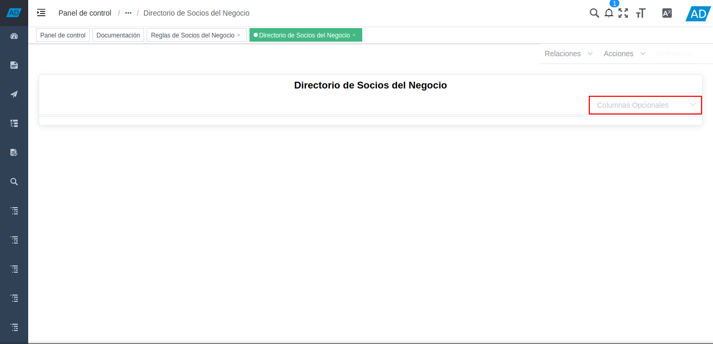
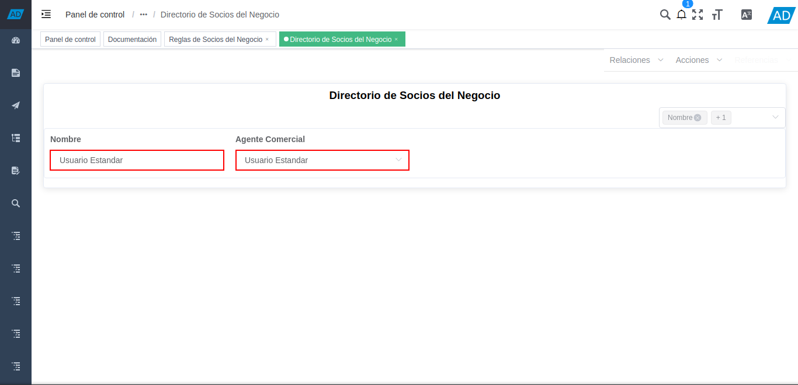
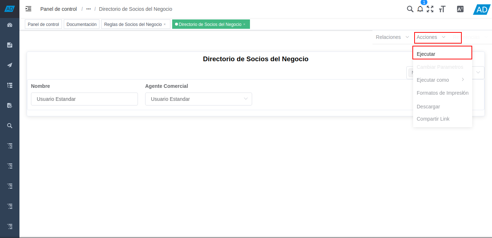
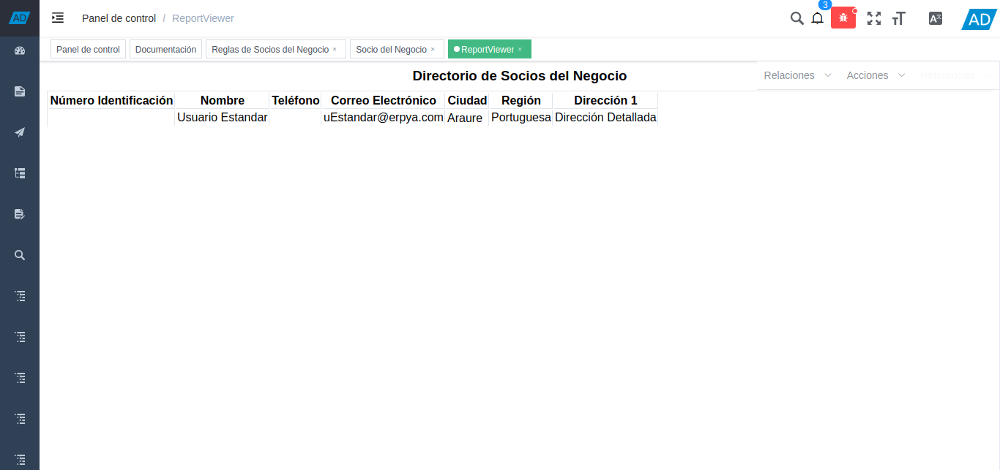
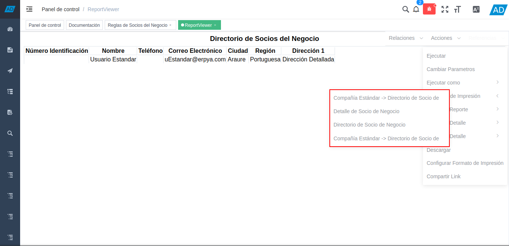
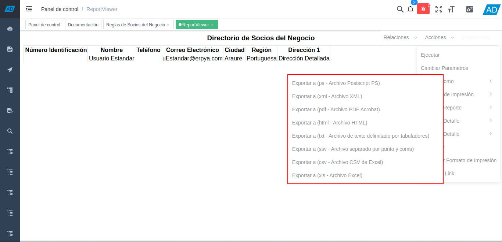

2.1.1. Directorio de Socios del Negocio¶
Ubique y seleccione en el menú de ADempiere, la carpeta “Relación con Socios del Negocio”, luego seleccione la carpeta “Reglas de Socios del Negocio”.

Imagen 1. Menú de ADempiere
Podrá visualizar la carpeta “Reglas de Socios del Negocio”, con diferentes ventanas, procesos y reportes.

Imagen 2. Carpeta Reglas de Socios del Negocio
Seleccione el reporte “Directorio de Socios del Negocio”, para generar el reporte en base a lo requerido.

Imagen 3. Selección del Reporte Directorio de Socios del Negocio
Podrá visualizar la ventana del reporte “Directorio de Socios del Negocio”, con el campo “Columnas Opcionales”, en el cual se pueden tildar los campos que se requieren para filtrar la información en el reporte.

Imagen 4. Campo Columnas Opcionales
Los campos que pueden ser agregados al reporte “Directorio de Socios del Negocio”, son los siguiente:
Nombre
Proveedor
Nombre del Contacto
Email
Agente Comercial
Grupo de Socio del Negocio
País
Estado del Crédito
Término de Pago
Región
Región de Ventas
Cliente
Empleado
Prospecto Activo
Agente Comercial
Entidad Acumulada
Morosidad
Exento de Impuesto en Venta
Esq List Precios/Desc
Lista de Precios
Grupo de Ventas
Tipo de Cuenta
Segmento
Tipo de Industria
Al ir tildando los campos requeridos en el reporte “Directorio de Socios del Negocio”, se agregan los mismos a la ventana de manera automática.

Imagen 5. Campos del Reporte
Introduzca en cada uno de los campos agregados al reporte, los valores correspondientes para filtrar la información del reporte en base a ello.

Imagen 6. Valores de los Campos
Note
Si no es ingresado ningún valor en los campos agregados a la ventana del reporte, ADempiere realiza una consulta general y muestra los resultados en base a los campos agregados.
Posicione el cursor en la opción “Acciones”, luego ubique y seleccione la opción “Ejecutar”, para generar el reporte a los valores ingresados en los campos agregados al reporte.

Imagen 7. Acción Ejecutar
Podrá visualizar el reporte de la siguiente manera.

Imagen 8. Reporte Directorio de Socios del Negocio
Para cambiar el formato de impresión del reporte, se debe posicionar sobre el campo “Acciones” y luego se debe posicionar sobre la opción “Formato de Impresión”.

Imagen 9. Cambiar Formato de Impresión.
Finalmente, seleccione el formato de impresión requerido.

Imagen 10. Cambiar Formato de Impresión.
Para exportar el reporte en el formato requerido, se debe posicionar sobre el campo “Acciones” y luego se debe posicionar sobre la opción “Ejecutar Como”.

Imagen 11. Exportar Reporte
Finalmente, seleccione el formato con el cual requiere exportar el reporte.

Imagen 12. Seleccionar Formato a Exportar